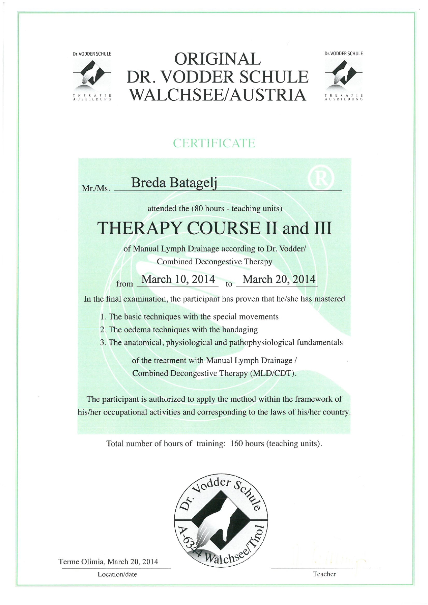

O salonu
V Salonu lepote in zdravja Breda Batagelj verjamemo, da koža ni le nekaj, kar vidimo v ogledalu. Kožo obravnavamo kot to, kar v resnici je: največji organ našega telesa, zaščitna plast med nami in svetom ter odraz našega notranjega ravnovesja.
Skrb za kožo ni le razvajanje ali estetika. Je oblika higiene, zdravja in spoštovanja lastnega telesa, podobno kot skrb za ustno votlino ali splošno dobro počutje. Naše poslanstvo je nuditi strokovno, varno in premišljeno nego kože, ki podpira njeno naravno funkcijo, odpornost in dolgoročno zdravje. Vsaka obravnava temelji na znanju, izkušnjah in razumevanju kože kot živega, občutljivega sistema.
Naša nega temelji na znanju, potrpežljivosti in zaščiti. Za kožo, ki ostaja zdrava skozi čas, ne le lepo videti za trenutek.
V salonu ustvarjamo prostor miru, zaupanja in strokovne oskrbe, kjer se vsaka oseba počuti slišano, varno in podprto na poti do bolj uravnotežene kože.
Naslov: Goriška cesta 29 E, 5270 Ajdovščina
Storitve
Nega obraza
Nega obraza s profesionalnimi izdelki Dermalogica.
Limfna drenaža po dr. Voddru
Limfna drenaža po dr. Voddru je nežna, natančna in strokovno vodena manualna tehnika, ki s specifičnimi gibi spodbuja naravni pretok limfe v telesu.
Depilacija
Depilacija obraza, nog, hrbta in drugih predelov.
Manikura
Nega rok, nohtov in dekoracija nohtov za urejen videz.
Pedikura
Specialna nega za občutljivo kožo, močni nohti, mehka stopala in občutek svežine.
Lepota in ličenje
Ličenje za posebne priložnosti.
Limfna drenaža po dr. Voddru

Kontakt
Salon lepote in zdravja Breda Batagelj s.p.
Goriška cesta 29 E
5270 Ajdovščina
☎ 05 368 13 77
📱 041 714 049